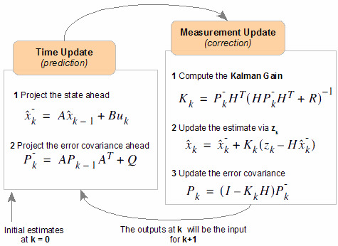

COMMERCIAL DETECTION IN AUDIO
Abstract
In this work, we have developed a system that is able to detect and remove commercials from an input
sound stream (radio broadcasts). Various features like spectral flux, zero crossings, spectral centroid,
signal energy etc., are extracted from the audio. Then these features are fed to Kalman filter, which sets
the value of state variable (predicted-state). Using a decision boundary with the state variable, each frame
is classified as either advertisement or song.
1. Introduction
Advertisements have become ubiquitous and form a major
portion of radio broadcasts in modern times. Many listeners
are disinterested in these commercials as they tune in to listen
to radio programmes. The primary revenue stream for social
and entertainment media is advertisement and entities like
YouTube and Google depend on them for revenue.
However, users of these social media do not like the commercial breaks; not only is this distracting and annoying for listeners, it also has adverse effects on consumer behavior .
In this work a radio stream monitoring system is designed and implemented to detect these advertisements.
However, users of these social media do not like the commercial breaks; not only is this distracting and annoying for listeners, it also has adverse effects on consumer behavior .
In this work a radio stream monitoring system is designed and implemented to detect these advertisements.
1.1 Introduction to Problem
This project aims at identifying and removing commercials segments from
audio signals acquired from radio feeds. The audio feed is first segmented
into a number of consecutive audio clips.
The task is to identify specific features that differentiate a commercial clip from a non-commercial one.
The task is to identify specific features that differentiate a commercial clip from a non-commercial one.
1.2 Figure
Block diagram of the project.

1.3 Literature Review
Write something here.
1.4 Proposed Approach
Intro to Kalman filter:
Kalman filter is a simple and fast algorithm which can be used to give an estimate of state based on erroneous sensor measurements. In case of linear systems, the estimate comes out to be the best. It can also predict states which cannot be directly obtained from sensor measurements. Some applications are in robotics, trackpad and even in the Apollo Project.
The best thing about this filter is it’s simple mathematical structure which makes it feasible to be applied in real time systems.
There are essentially 2 steps in a Kalman filter –
Motion/Time Update step and Measurement Update Step.
Kalman filter is a simple and fast algorithm which can be used to give an estimate of state based on erroneous sensor measurements. In case of linear systems, the estimate comes out to be the best. It can also predict states which cannot be directly obtained from sensor measurements. Some applications are in robotics, trackpad and even in the Apollo Project.
The best thing about this filter is it’s simple mathematical structure which makes it feasible to be applied in real time systems.
There are essentially 2 steps in a Kalman filter –
Motion/Time Update step and Measurement Update Step.

Use of Kalman Filter in Commercial Detection: We make use of a simple 1D Kalman filter which is equivalent to Bayesian Filter. Our state is a 1D variable X with associated uncertainly (variance) P. An audio file is read in clips of 3 seconds and with every clip, the state is updated (through one motion update and one measurement update). If the state comes as positive then the clip is considered as commercial and if it comes as negative it is considered music.
In every clip:
1) Features are extracted, and these features are used as used as sensor readings.
2) Measurement Update: The sensor readings lead to a measurement in state. X and P are updated.
3) Motion Update: The state is moved closer to origin and the uncertainly (P) is increased.
Here is the justification for the approach:
1) Since previous state has certain amount of say in the next state, the erroneous detection of commercials are filtered. The Kalman Filter in some sense is preventing sudden changes in state. E.g. It is unlikely that a single clip of 3 seconds is commercial while all the neighbouring clips to the left and right are music.
2) If an advertisement is running for a long time than it is likely that it will end soon. Similar is the case with music. The motion update step moves the state towards origin (i.e., commercial towards music and music towards commercial).
Use of Kalman Filter in Commercial Detection: We make use of a simple 1D Kalman filter which is equivalent to Bayesian Filter. Our state is a 1D variable X with associated uncertainly (variance) P. An audio file is read in clips of 3 seconds and with every clip, the state is updated (through one motion update and one measurement update). If the state comes as positive then the clip is considered as commercial and if it comes as negative it is considered music.
In every clip:
1) Features are extracted, and these features are used as used as sensor readings.
2) Measurement Update: The sensor readings lead to a measurement in state. X and P are updated.
3) Motion Update: The state is moved closer to origin and the uncertainly (P) is increased.
Here is the justification for the approach:
1) Since previous state has certain amount of say in the next state, the erroneous detection of commercials are filtered. The Kalman Filter in some sense is preventing sudden changes in state. E.g. It is unlikely that a single clip of 3 seconds is commercial while all the neighbouring clips to the left and right are music.
2) If an advertisement is running for a long time than it is likely that it will end soon. Similar is the case with music. The motion update step moves the state towards origin (i.e., commercial towards music and music towards commercial).
1.5 Report Organization
Write something here.
2. Proposed Approach
Write something here.
3. Experiments & Results
3.1 Dataset Description
Write something here.
3.2 Discussion
Write something here.
4. Conclusions
4.1 Summary
Write something here.
4.2 Future Extensions
Write something here.